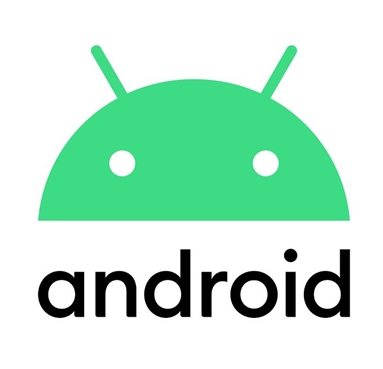

안녕하세요. 소프트웨어공학전공 조승훈 입니다.
간단한 자기 소개와 함께 현재 제가 관심있어하는 분야와 기술
그리고 기업들을 보여드리겠습니다.
- 모바일 산업은 현재 계속 발전하고 확장 되가고 있습니다. 요즘 다양한 웨어러블 기기가 개발되고 있는데 웨어러블 기기마다 각자 특징이 다릅니다. 이에 따른 앱을 만들어야 하고 하드웨어의 발전이 곧 소프트웨어 시장의 확장으로 이어주니 기대가 높은 분야라고 생각합니다.
앱테크, 게임, 금융 등 다양한 분야의 앱을 사용하고 경험하면서, 나의 삶이 변화하고 영향을 받는 것을 느꼈습니다. 앱을 통해 많은 사람들이 개인의 삶의 질을 향상시키거나 새로운 경험을 제공받을 수 있습니다. 이러한 이유로, 저도 앱 개발을 통해 많은 사람들에게 소소한 행복을 제공해주고, 일어나는 작은 문제들을 해결법을 제시하는 앱을 개발하고 싶습니다.
- 컴퓨터 비전은 이미지 및 비디오 데이터를 해석하고 이해하는 기술로, 현실 세계의 시각적 정보를 컴퓨터가 처리하고 활용할 수 있게 합니다. 이러한 기술은 다양한 분야에서 활용되고 있으며, 특히 모바일 앱 분야에서는 컴퓨터 비전을 통해 사용자에게 향상된 시각적 경험을 제공하는 앱들이 많이 개발되고 있습니다.
컴퓨터 비전 기술을 배움으로써 저는 사용자들에게 더욱 풍부하고 흥미로운 시각적 경험을 제공하는 앱을 개발할 수 있을 것으로 기대하고 있습니다.
- 네이버는 모바일 앱 분야에서는 많은 인기를 얻고 있습니다. 네이버의 기술과 서비스에 관심을 가지는 이유는 나의 앱 개발을 통해 사용자들에게 유용한 서비스를 제공하고자 하는 목표와 일치하기 때문입니다. 네이버는 뛰어난 기술력과 창의적인 아이디어를 통해 사용자들의 삶을 향상시키는 서비스를 제공하고 있으며, 나는 네이버와 함께 일하며 이러한 가치를 실현할 수 있는 기회를 갖고 싶습니다.

- 팀 쿡을 보고 많은 감명을 받았습니다. 그는 애플의 CEO로서 혁신적인 제품과 기술 개발에 큰 역할을 했습니다. 저는 팀 쿡의 지도력과 비전에 영감을 받아 모바일 프로그래밍 분야에서 그의 영향을 받아 성장하고자 했습니다. 그의 전략적인 의사결정과 지속적인 혁신에 대한 열정을 배우며, 애플의 제품 디자인과 사용자 경험에 대해 관심을 키웠습니다. 저는 팀 쿡의 명언 중 "최고의 제품을 만들기 위해서는 탁월한 팀을 구축해야 한다"라는 말을 신조로 삼아 협업과 팀워크를 중심으로 앱 개발을 해나갈 예정입니다. - 그리고 프로그래밍에 관심을 다지는 계기가 된 이유 중 하나는 프로그래밍 커뮤니티에서 만난 사람들입니다. 온라인 서핑 중 우연히 커뮤니티 그룹에 소속되는 계기가 생겼고 그들과의 소통을 통해 다양한 프로그래밍 기술적 문제를 해결하는 방식을 배웠고 특히 모바일 쪽 기술을 많이 들으면서 진로를 잡았습니다. 이러한 커뮤니티에서의 활동은 나에게 협업과 지식 공유의 중요성을 깨닫게 했습니다.
대학교에서는 컴퓨터 공학을 전공을 선택하여 기초적인 프로그래밍 지식을 습득했습니다. 그리고 모바일 프로그래밍 관련 수업을 선택하여 안드로이드 앱 개발을 배우고 있으며 안드로이드 게임 제작에 참여 중입니다.
COVID-19와 러시아의 우크라이나 침공으로 에너지/식량 안보 위기가 대두되고 있습니다. 특히 한국은 원유, 천연가스, 전기 생산 원료 등 대부분 수입에 의존하고 있는 상황이라 전력비가 오르는 난간에 부딪힌 상황입니다. 거기에 에너지 전환 사업을 추진하고 있는 중이었기에 석탄류의 에너지 사용을 줄이고 전기와 친환경에너지를 늘리고 있었기에 전기세의 상승은 피할 수 없는 상황입니다.
이에 식량 상황도 마찬가지로 날이 갈수록 곡물 자급률이 떨어지고 있는 와중 전쟁으로 인해 우크라이나의 곡물 수출이 봉쇄되고 에너지/비료 가격 상승, 기후 변화로 인한 식량 생산 방해로 전체적으로 식량 가격이 오르고 있는 상황입니다.
국가적으로는 외/내적 투자량을 증가시켜 식량/에너지 사업을 키워야 합니다. 에너지 분야에서는 신재생 에너지 개발과 에너지 다각화를 촉진하고 국제 에너지 협력을 강화해야 합니다. 식량 분야에서는 농업 지원 정책을 강화하고 농업 기술 개발에 투자하여 생산성을 높여야 합니다. 소비자로서 신재생 에너지를 활용하고, 지역 농산물을 선호하여 구매하며, 식품 낭비를 줄이는 것이 중요합니다.
개인적으로 태양광 패널이나 풍력 발전기 등의 장치를 설치하여 신재생 에너지를 활용하고, 지역 농산물을 구매하여 지역 경제를 지원하며, 식단 계획을 세우고 필요한 양을 구매하여 식품 낭비를 줄이는 것이 필요합니다. 이러한 노력은 우리의 환경과 경제에 긍정적인 영향을 미칠 것입니다. 정책적 변화와 소비자들의 변화된 행동을 통해 중장기적으로 외부 환경 변화에 버틸 힘과 자급자족을 갖춘 농업을 구축할 수 있습니다. 이 문제들은 국가와 소비자가 협력하여 적극적으로 추진되어야 할 중요한 과제라고 생각합니다.
대학 동아리에서 유니티 3D를 사용하여 게임을 개발한 경험이 있습니다. 이 프로젝트를 진행하면서 성능 저하와 병목 현상에 대해 많은 고민을 했습니다. 초기에는 최적화를 제대로 진행하지 않아 게임이 느려지는 느낌을 받았고, 이후 병목 현상이 발생한 것을 깨달았습니다. 이를 해결하기 위해 다음과 같은 방법을 사용했습니다
- 첫째로, 프로파일링 도구를 사용하여 성능에 영향을 주는 부분을 찾았습니다. CPU, 메모리, GPU 사용량을 확인하고 병목 현상이 발생하는 부분을 식별했습니다. 이를 통해 어떤 부분에서 성능 저하가 발생하는지 파악했습니다.
- 둘째로, 식별된 병목 현상을 해결하기 위해 최적화 기술을 적용했습니다. 스크립트를 다시 재구성하여 알고리즘을 개선하거나, 불필요한 연산을 제거하거나 등의 내부 자료 구조들을 최적하는 방법을 사용했습니다. 이를 통해 성능을 향상시킬 수 있었습니다.
- 셋째로 특히, 그래픽 최적화에 노력을 기울였습니다. 유니티의 무거운 큰 원인 중 하나가 셰이더와 텍스처 등의 그래픽적 요소라는 것을 종종 들었기에 셰이더, 텍스처 최적화를 진행했고, 뷰 프러스텀를 통해 적은 렌더링 작업 환경을 구성했습니다. - 이러한 노력을 통해 게임의 성능을 개선했고, 최적화와 병목 현상 해결에 대한 경험을 쌓을 수 있었습니다. 이후로도 게임 개발에서 최적화와 성능 향상에 항상 주의를 기울이며, 지속적인 학습과 도전을 통해 더 나은 게임을 만들고자 노력하고 있습니다.
저는 컴퓨터 공학과 3학년 학생으로, 다양한 프로그래밍 언어와 기술을 익히며 프로젝트에 기여할 수 있는 역량을 갖추었습니다. C, C++, 파이썬, 자바 등의 언어를 배웠으며, 이를 통해 기초적인 프로그래밍 지식을 확립했습니다. 프로그래밍에 있어서는 항상 새로운 도전을 두려워하지 않고, 문제 해결을 위해 노력하는 자세를 갖고 있습니다.
그리고, 게임 제작 동아리에 가입하여 다양한 게임 프로젝트를 진행한 경험이 있습니다. 이를 통해 소통과 협업 능력을 향상시키고, 팀원들과의 조화로운 협업을 통해 뛰어난 결과물을 창출할 수 있었습니다. 게임 제작은 창의력과 논리적 사고를 동시에 요구하는 분야로, 이를 통해 저의 창의성과 문제 해결 능력을 발전시켰습니다.
또한, 동아리 활동을 통해 선후배들과 함께 팀을 이뤄 프로그래밍 교육 활동을 진행한 경험이 있습니다. 이를 통해 리더십과 자신감을 키우는 기회를 얻었고, 동료들과의 협업을 통해 서로의 아이디어와 지식을 공유하며 성장할 수 있었습니다.
저는 지금까지의 경험과 학습을 통해 프로그래밍 능력뿐만 아니라 팀워크, 소통, 문제 해결 능력 등 다양한 역량을 키워왔습니다. 앞으로의 도전과 프로젝트에서도 이러한 역량을 바탕으로 높은 수준의 기여를 할 수 있을 것입니다. 더불어 항상 새로운 기술과 도구에 대한 학습에도 열려있으며, 지속적인 성장과 발전을 추구하고 있습니다.
C
C++
JAVA
PY
컴퓨터 비전
"시간의 흐름과 함께 세상을 눈으로 담아내는 마법,
그것이 컴퓨터 비전입니다."
컴퓨터 비전 기술
컴퓨터가 상황을 인식하고 물체를 구별(객체 인식+이해)할 수 있는
시각적 능력(visual ability)을 갖추게 하는 컴퓨터 과학 학문
사람의 사물을 보고 상황을 파악하여 인지하는 작업 능력을 그대로
컴퓨터가 수행 컴퓨터가 이해할 수 있도록 이미지의 특징을 추출하는
행위
컴퓨터 비전에서 주로 활용하는 영상 정보는 주로 밝기, 색상, 텍스처
등이 있으며 이러한 정보들을 딥러닝, 특히 CNN(Convolutional Neural
Network) 알고리즘을 함께 사용하여 사물을 인지함.
컴퓨터 비전 간단 작동 원리
이미지 수집
동영상, 사진 또는 3D 기술을 통해 분석할 (심지어 대량의) 이미지를
실시간으로 수집할 수 있습니다.
이미지 처리
딥 러닝 모델에는 이미지 수집 프로세스의 대부분이 자동화되어 있지만
라벨이 부착된 수천 개의 이미지를 먼저 업로드하여 학습시키는 경우도
있습니다.
이미지 파악
마지막 단계는 객체를 식별하거나 분류하는 해석 단계입니다.
컴퓨터 비전 예시
구글 렌즈
구글 렌즈는 컴퓨터 비전, 기계 학습 및 인공지능 기술을 이용하여 사물 인식, 텍스트 해석, QR 코드 및 바코드 스캔 등 다양한 기능을 제공하는 강력한 모바일 비주얼 검색 도구입니다.
May 17, 2023
답글 : 51 공유 : 100
하트 : 104 공유
모션 트래킹
모션 트래킹은 컴퓨터 비전과 알고리즘을 활용하여 움직임을 감지하고 추적하는 기술로, 주로 인체 동작 인식, 가상 현실 및 증강 현실 애플리케이션에 적용되어 사용자와 상호작용하는 다양한 경험을 제공합니다.
May 23, 2023
답글 : 5 공유 : 98
하트 : 100 공유
자율 주행 자동차
자율주행자동차는 센서, 인공지능 및 알고리즘을 통해 주행환경을 인식하고 판단하여 조향, 가속, 제동 등의 제어를 자동으로 수행하는 차량으로, 운전자의 개입 없이 안전하고 편리한 주행을 실현합니다.
May 17, 2023
답글 : 9 공유 : 200
하트 : 300 공유
인스타 릴스
"컴퓨터 비전을 곁들인 인스타릴스"는 인스타그램 스토리에 실시간으로 적용되는 텍스트, 스티커, GIF 등 다양한 요소를 컴퓨터 비전 기술을 활용하여 인식하고 처리하여 콘텐츠를 생성하고 공유하는 혁신적인 기술입니다.
1999년에 설립된 네이버는 국내 1위 인터넷 포털 '네이버(NAVER)'와 글로벌 모바일 플랫폼 '라인(LINE)' 등을 운영하며, 다양한 인터넷 서비스를 기반으로 디스플레이 광고, 동영상 광고 등 광고 사업과 검색, 쇼핑 검색 등 비즈니스플랫폼 사업, 네이버 페이, 클라우드, 웍스 등 IT플랫폼 사업, 네이버 뮤직, 웹툰 등 플랫폼 사업을 영위하고 있다.
이외에도 네이버는 게임업체 ‘한게임’과 검색전문회사 ‘서치솔루션’을 인수합병한 후 통합검색을 세계 최초로 출시했고, 네이버 재팬’의 모바일 메신저 ‘라인’을 출시하며 성공의 기틀을 마련한 뒤, 일본 외 시장에서도 큰 호응을 얻으며 글로벌 메신저로 성장했다. 이러한 사업을 바탕으로 네이버는 라인 주식회사, 라인플러스, 네이버비즈니스플랫폼, 라인씨앤아이 등 98개의 자회사를 두고 있으며, 일본, 미국, 영국, 중국, 베트남, 대만, 태국 등지에 해외법인이 있다. 해외연구소로는 '네이버 · 라인 - 홍콩과학기술대학 AI 연구소', ‘네이버랩스유럽’ 등이 있다.
2021년에는 중소상공인을 대상으로 하는 전문 비즈니스 교육 플랫폼 '네이버 비즈니스 스쿨' 온라인 캠퍼스를 오픈했다. 디지털 플랫폼 상에서의 작은 규모의 경영에 필요한 교육 정보 프로그램을 제공하는 것이 특징이다. 최근 2022년 5월에는 '네이버 검색 콜로키움 2022'에서 기존의 통합검색에서 최신 인공지능 기술을 통해 사용자 맞춤형 검색으로 발전하는 '에어서치'로의 변화 및 연구 성과를 발표했다. 에어서치는 세분화되고 다양해지는 사용자의 요구를 충족시키기 위해 스마트블록을 사용하여 검색 결과를 제공하는 새로운 검색 브랜드이다. 앞으로 사용자가 인공지능을 일상에서 체감할 수 있는 검색 환경을 구축하기 위해 스마트블록을 30%까지 확대 적용할 계획이다.
매출액
영업이익
당기순이익
네이버 주요 서비스
👤
네이버
❤️💬🔁
종합 포털로서 다양한 서비스를 제공하여 사용자들에게 편리하고 다양한 정보와 콘텐츠를 제공
2 hours ago
👤
네이버 지도
❤️💬🔁
사용자에게 정확하고 상세한 지도 정보를 제공하여, 위치 검색, 길 안내 등을 통해 경로 탐색을 도우는 서비스
1 day ago
👤
네이버 카페
❤️💬🔁
다양한 관심사와 주제를 공유, 소통할 수 있는 커뮤니티 공간, 자유롭게 정보를 교류와 소통하는 플랫폼
3 hours ago
👤
네이버 나우
❤️💬🔁
실시간으로 변화하는 다양한 소식과 이슈를 한눈에 확인, 다양한 콘텐츠와 사용자들의 의견을 공유 플랫폼
4 hours ago
👤
네이버 클로바
❤️💬🔁
인공지능 기술을 활용하여 음성인식, 자연어처리, 이미지인식 등 다양한 기능을 제공하는 개인 비서 서비스
5 hours ago
👤
네이버 박스
❤️💬🔁
다양한 문서와 파일을 한 곳에 모아 효율적으로 관리하고 공유할 수 있는 클라우드 기반의 온라인 문서 관리 서비스입니다./div>
6 hours ago
채용 정보
인재상
얼굴이라는 책임감으로 겸손한 자세를 유지하는 인재
원활한 커뮤니케이션 상호 신뢰를 바탕으로 문화적 편견을 담은 행동을
하지 않는 인재
고객에게 최고의 가치와 만족을 창출하기 위해 창의적이고 혁신적인
사고로 업무에 임하는 인재
끊임없는 열정으로 업무에 대해 도전하고 네이버의 상충되는 사적인
활동이나 관계를 만들지 않는 인재